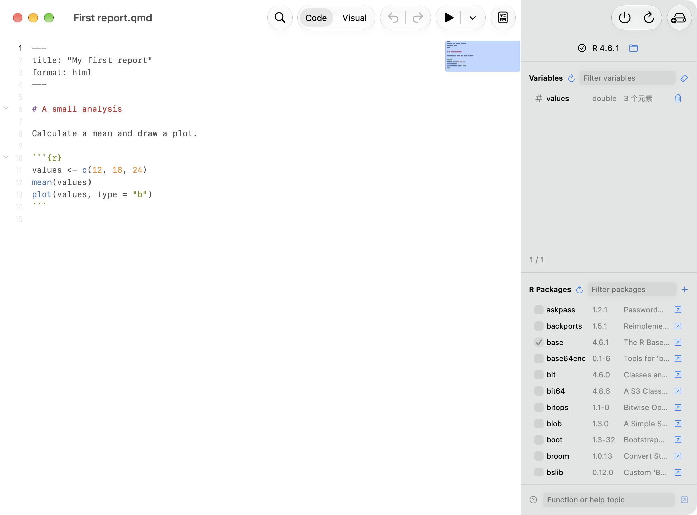

Interface Tour
The document window contains the editor on the left and an inspector on the right. Toolbar actions apply to the current document. Inspector contents belong to this window’s R session.
Code: edit exact source

The filename menu provides Save; the File menu includes Save As and document synchronization. Code / Visual changes the editing view, followed by Undo/Redo, Run All and execution-range controls, and Quarto rendering. Line numbers locate source. Arrows beside fences and headings fold displayed content without deleting it. The minimap helps navigate long documents.
Visual: write within the layout

Visual lays out common Markdown constructs. The editing toolbar and Format/Insert menus provide headings, emphasis, lists, links, images, formulas and tables. Chunk-side controls run or format R; Copy copies the code. Interactive results appear beside the document text. Use the narrow heading navigator to jump to a section.
Code and Visual edit the same source. Use Code for detailed YAML, Quarto options or literal markup.
Right-hand inspector
| Area | Use |
|---|---|
| R toolbar | Power starts/stops the session; Restart clears objects and starts again; RData saves the workspace separately |
| R status and version | R version and busy/ready state; hover for the final execution summary |
| Variables | Refresh, filter names/types/summaries, clear objects, or open a read-only preview |
| Variable paging | Load More fetches another page; filtering covers the full session metadata |
| Packages | Refresh, filter and install; details include descriptions and official links |
| Help | Search for a function or topic on the official R search service |
During Run All, the sector indicator counts processed chunks rather than predicting remaining time. This batch’s results appear together when the run ends. Manually running a single chunk continues to show output as it arrives.
Rendering panel

Choose the format and destination, then YAML or custom parameters. Custom parameters are grouped into document, style, code and figures, and additional options; visible options depend on format. Read the bottom log for execution details and errors. Cancel interrupts the task. See Running R and Rendering.
Help and settings
The detailed guide has expandable sections on the left and illustrated articles on the right. Search, Back/Forward, Home and the sidebar toggle sit above. Two separate compact guides cover quick actions and syntax essentials.
Settings has General, Document, Fonts, Highlighting, Completion, Formatting and Environment pages directly in its toolbar. Drag the document divider to resize the inspector. Documents open in separate windows; switch between them in the Window menu.